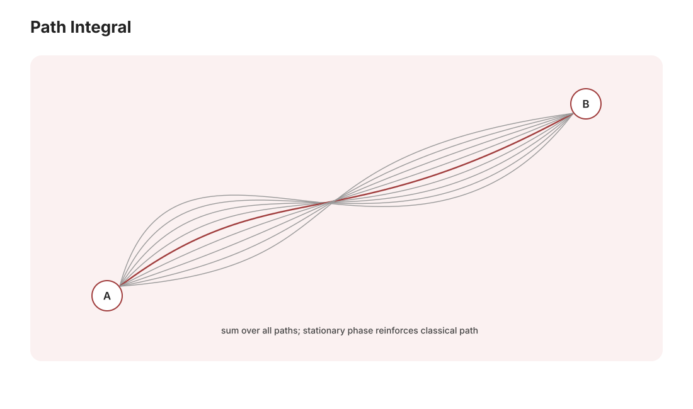

本页目录
高量 III · 路径积分与密度矩阵
对标：Sakurai §2.6 / Feynman–Hibbs ｜ 前置：mech-02（作用量）、qm-01、sc 线（数学站） 高量收官的两件现代武器：路径积分——量子力学的第三种表述（对一切历史求和），场论与统计物理的通用语言；密度矩阵——混合态与开放系统的语言，量子信息（qi 线）的记号地基，顺手回答"经典世界从哪来"（退相干）。

学习层：一条量子跳跃轨迹怎样平均成 Lindblad 密度矩阵？
1. 具体问题：一次实验看到的是平滑衰减，还是突然跳跃？
本节只研究一个可逐行核验的零温最小模型：初态是激发态 \(\lvert1\rangle\)，基态是 \(\lvert0\rangle\)，没有 Hamiltonian 相位进动，唯一的跳跃算符为
问题不是“波函数会不会神秘地变成一条经典路线”，而是：若环境被 photon-counting 方案监测，我们记录到的一次条件历史是什么？把许多同样制备的条件历史平均后，为什么得到同一个 Lindblad \(\rho(t)\)？ 先写下四个预测，再打开实验台：
- 单条 \(p_1(t)\) 是每条都平滑地 \(e^{-\gamma t}\) 降，还是在某个 \(\tau\) 处从 1 跳到 0？
- \(N\) 条轨迹平均的 \(P_1(t)\) 应趋近 \(e^{-\gamma t}\)，还是 \(1-e^{-\gamma t}\)？
- 观察窗到 \(T\) 但尚未看到跳跃，应记 \(\tau=T\)，还是记 \(\tau>T\)（右删失）？
- 已知 no-jump 到 \(t\)，条件态仍是 \(\lvert1\rangle\)，还是仍保留一个未归一化因子？
无 JavaScript 时的静态读法：取 \(\gamma=1\)、\(N=4\)、\(T=1\)，用固定 seed 生成四个独立 \(u_i\in(0,1)\)，再按 \(\tau_i=-\ln(1-u_i)/\gamma\) 手算；在任意时刻 \(t\)，只数 \(\tau_i>t\) 的轨迹，得到 \(\widehat P_1(t)=N^{-1}\sum_i\mathbf1_{\{\tau_i>t\}}\)。解析靶点是 \(P_1(t)=e^{-t}\)，有限样本误差是 \(\widehat P_1(t)-e^{-t}\)，不是“脚本出错”。想完全脱离随机数手算，可取 \(u=(1/4,1/2,3/4,7/8)\)：此时 \(\tau=(\ln(4/3),\ln2,\ln4,\ln8)\)，在 \(t=1\) 有 \(\widehat P_1=1/2\)，解析值是 \(e^{-1}\)。
2. 闭式推导：no-jump、跳跃与生存概率是一笔账
把 Lindblad 生成元写成
在 quantum-jump unraveling 中，未归一化 no-jump state 由有效 Hamiltonian 演化：
它不是条件态，因为
还没有归一化；这个范数平方正好是“截至 \(t\) 尚未发生跳跃”的生存概率。因此
若实验条件明确告诉我们“到 \(t\) 为止没有探测到光子”，就要归一化：
所以本模型中 no-jump 条件态的 \(p_1\) 仍为 1；指数因子属于未归一化的分支权重，不是条件态里还剩下的布居。
若 \(\tau\) 已发生，跳跃算符把激发态送到基态：
第 \(i\) 条单轨迹是一个随机阶跃：跳前 \(p_1=1\)，跳后 \(p_1=0\)，而不是一条逐点等于 \(e^{-\gamma t}\) 的平滑曲线。注意 \(\tau\) 的指数随机性来自监测记录；它不是把一个波包在经典时空中“拍摄”出的唯一客观历史。
3. 从阶跃平均到 Lindblad \(\rho\)：系综才恢复平滑曲线
对 \(N\) 条独立、同分布轨迹做样本平均：
因而解析的非选择性密度矩阵为
它满足上面的 Lindblad 方程，且
只是有限样本估计。固定 seed 只保证同一账本可复现，不保证 \(\widehat P_1=P_1\)；样本平均的误差是 Bernoulli 误差：
在实验图里，金色曲线是选定的一条 \(0/1\) 阶跃，蓝色阶梯是有限 \(N\) 的平均，绿色虚线才是闭式 \(e^{-\gamma t}\)。\(N=1\) 时平均仍是一次 Bernoulli 结果；\(N\) 小时偏差并不违反 Lindblad 方程。
4. 术语边界：四个“轨迹”句子必须分开
- 未归一化 no-jump state：\(\lvert\widetilde\psi_0(t)\rangle=e^{-\gamma t/2}\lvert1\rangle\)，范数平方是生存概率；它是分支振幅，不是已经给定 no-jump 条件后的物理态。
- 条件态：给定监测记录（例如“至今没有跳”）后再归一化的态；本例为 \(\lvert1\rangle\)。给定“已跳”后则为 \(\lvert0\rangle\)。
- 单轨迹随机性：\(\tau_i\) 由指数分布抽样，决定某一条记录何时阶跃；它不是解析 \(P_1(t)\) 本身。
- 系综密度矩阵：忽略记录、对所有条件分支按概率平均得到的 \(\rho(t)\)；它才是非选择性实验的 Lindblad 对象。不要把一条条件态的纯投影直接叫作 \(\rho(t)\)。
“unraveling”指把同一主方程拆成带记录的条件演化方案。本台是 photon-counting / jump unraveling；用 homodyne 等连续弱测量会得到扩散型单轨迹，单轨迹形状与条件态更新不同，但在同一初态、同一 Lindblad 生成元和完整记录平均下，仍须恢复同一个 \(\rho(t)\)。因此我们不宣称轨迹是唯一客观历史：它依赖于选择了什么观测通道、保留了什么记录以及采用了什么条件化描述。
5. 实验读法：跳跃时间账本、删失与预测反馈
每条轨迹先用 \(u_i\) 生成
若只观察到 \(T\)，则 \(\tau_i\le T\) 的记录是“窗口内已观测跳跃”；若 \(\tau_i>T\)，我们只知道它晚于 \(T\)，应写作 \(\tau_i>T\)，右删失（right-censored），不能把它伪装成在 \(T\) 恰好跳跃。删失并没有改变模型的生存概率，只改变我们能从这段有限观察窗读到多少信息。
可操作顺序是：先在四个问题上作答；选择“基准：32 条”“小样本：4 条”“窗口删失”或“边界：\(\gamma=0\)”预设；再滑动 \(t\)、\(N\)、\(T\)、\(\gamma\) 和轨迹编号 \(k\)。观察：
- \(k\) 条金色阶跃何时落下；
- 蓝色 \(\widehat P_1(t)\) 怎样以 \(1/N\) 为台阶逼近绿色解析线；
- 当前误差与解析 \(1\sigma\) 参考如何随 \(N\) 改变；
- 下方矩阵怎样用 \(\widehat P_1(t)\) 记账，而不是把单轨迹条件态冒充系综态。
无脚本时仍可手算：\(\gamma=1\)、\(u=1/2\) 给 \(\tau=\ln2\)；在 \(t<\ln2\) 时该轨迹 \(p_1=1\)，在 \(t>\ln2\) 时 \(p_1=0\)。若 \(T<\ln2\)，账本写 \(\tau>T\)，而不是 \(\tau=T\)。
6. 边界与 aqm-03 / oqs-01 的桥
- \(\gamma=0\) 时 \(L=0\)，\(\tau=\infty\)、\(S(t)=1\)、\(\rho(t)=\lvert1\rangle\langle1\rvert\)；这不是“抽样恰好没跳”，而是结构性的永不跳分支。代码把它单独记为 structural no-jump。
- \(N=1\) 或很小的 \(N\) 时，经验曲线必然粗糙；\(\operatorname{SE}\) 只是解析 Bernoulli 标尺，不是对当前一次 realization 的保证区间。
- \(T=0\) 时所有正率轨迹都右删失；当前 \(t\) 自动限制在 \([0,T]\)。
- 这仍是零温、两能级、时间齐次 Markov、单跳跃通道的最小模型；有限温需要加入 \(\lvert1\rangle\langle0\rvert\) 的向上跳跃，非 Markov 记忆也不应直接套用此指数生存律。
本页前面的路径积分把“对所有历史求和”当作幅的组织方式；这里则把可记录的条件历史按概率平均，得到密度矩阵。它们不是同一个积分符号的直接替换：前者是相位相消的量子幅，后者是开放系统记录的概率平均。与 oqs-01 的桥在于：oqs-01 先给出 GKSL/Lindblad 的非选择性主方程与约化态；本节把其中的 \(L\rho L^\dagger\) 拆成一次次跳跃记录，再平均回同一 \(\rho(t)\)。
7. 迁移问题：换初态、换监测、换浴
- 若初态改为 \(\alpha\lvert0\rangle+\beta\lvert1\rangle\)，仍用同一 \(L\)：哪些分支保留相干项？先写出 no-jump 的未归一化振幅，再求跳跃分支的条件态。
- 把 photon-counting 换成 homodyne unraveling：你预期单轨迹是阶跃、连续扩散，还是两者都可因测量方案而变？哪些量在完整记录平均后必须不变？
- 若浴有限温，加入 \(L_\downarrow=\sqrt{\gamma_\downarrow}\lvert0\rangle\langle1\rvert\) 与 \(L_\uparrow=\sqrt{\gamma_\uparrow}\lvert1\rangle\langle0\rvert\)。长时间 \(p_1\) 应趋向哪一个比率？原来的“跳后永远保持基态”哪一步失效？
1. 路径积分：对一切历史求和
命题（Feynman） 传播子（\(t_a \to t_b\) 的跃迁幅）：
——对连接两端的一切路径求和，每条路径贡献相位 \(e^{iS/\hbar}\)（\(S\) = 经典作用量，mech-02 的主角）。
【推导骨架（时间切片）】 把 \(e^{-i\hat Ht/\hbar}\) 切成 \(N\) 段、每段插入位置完备基 \(\int|x\rangle\langle x|dx\)；单段幅用 \(\langle x'|e^{-i(\hat p^2/2m + V)\epsilon/\hbar}|x\rangle\)（Trotter 分解 + 动量高斯积分）= \(e^{\frac{i\epsilon}{\hbar}[\frac{m}{2}(\frac{x'-x}{\epsilon})^2 - V]}\)——指数上恰是 \(L\,\epsilon\)；连乘取极限即 \(e^{iS/\hbar}\) 的路径积分。\(\blacksquare\)
经典极限的一行解释：\(\hbar \to 0\) 时相位剧烈振荡、路径互相抵消，唯有 \(\delta S = 0\) 的驻相路径幸存（mp-01 驻相法）——最小作用量原理（mech-02）是量子干涉的宏观残影：为什么自然界"走极值路径"的两百年之谜在此闭合。双缝干涉 = 两条路径的最小求和；AB 效应【引用】：矢势通过相位 \(\frac{q}{\hbar}\oint\mathbf A\cdot d\boldsymbol\ell\) 影响干涉——规范势的物理实在性（pp-01 伏笔）。
Wick 转动（跨界之桥）：\(t \to -i\tau\) 后 \(e^{iS/\hbar} \to e^{-S_E/\hbar}\)——量子力学变成统计力学（虚时传播子 = 配分函数：\(Z = \mathrm{Tr}\,e^{-\beta\hat H}\) 是周期虚时的路径积分,温度 = 虚时周期的倒数）。这座桥的交通流量：量子蒙卡（comp-01）、场论的欧几里得方法（qft-03）、以及数学站 sc 线的 Feynman–Kac（同一公式的概率语言——三个学科在此共用一条隧道）。
2. 密度矩阵：混合态的语言
纯态不够用的两个场景：系综的统计混合（以概率 \(p_i\) 制备 \(|\psi_i\rangle\)）、纠缠系统的子系统。
定义：\(\hat\rho = \sum_i p_i|\psi_i\rangle\langle\psi_i|\)；期望 \(\langle A\rangle = \mathrm{Tr}(\hat\rho\hat A)\)；性质：自伴、\(\mathrm{Tr}\rho = 1\)、半正定（矩阵分析 II 的 PSD 语言）。纯度判据：\(\mathrm{Tr}\rho^2 = 1 \iff\) 纯态（\(\rho^2 = \rho\) 即秩一投影）。演化：von Neumann 方程 \(i\hbar\dot\rho = [\hat H, \rho]\)（经典 Liouville 的量子版——mech-03 再对账）。热平衡态：\(\rho = \frac{e^{-\beta\hat H}}{Z}\)（sm-02 Boltzmann 的算符形态）。
约化密度矩阵（纠缠的接口）：复合系统 \(|\Psi\rangle_{AB}\) 只看 A：\(\rho_A = \mathrm{Tr}_B|\Psi\rangle\langle\Psi|\)——纠缠纯态的子系统是混合态（信息在关联里而不在局部——qi-01 的中心事实）；纠缠熵 \(S = -\mathrm{Tr}\rho_A\ln\rho_A\)（von Neumann 熵——Shannon 熵（信息论线）的量子版：三条熵线在此三会）。
退相干（"经典世界从哪来"的半个答案）【机制级】：系统与环境纠缠 → 对环境取迹 → \(\rho_A\) 的非对角元（相干项）指数衰减（环境"记录"了哪条路径 = 相位信息泄漏）；口袋里的猫态在 \(\sim10^{-23}\) s 内退净【引用量级】——宏观叠加不是被禁止而是被极速泄密。测量问题的现代表述由此改写（残余的"选择基"问题仍开放——诚实边界）；量子计算的头号敌人（qi-03 纠错的对手）在此定性。
3. 练习与要点
例 1（自由粒子传播子亲算） 切片高斯积分逐层合成：\(K \propto e^{\frac{im(x_b - x_a)^2}{2\hbar t}}\)——指数恰是自由粒子经典作用量 \(\frac{iS_{cl}}{\hbar}\)（二次型拉氏量的普遍事实：路径积分 = 经典项 × 涨落行列式【引用】）。
例 2（Bell 态的约化） \(|\Psi\rangle = \frac{1}{\sqrt2}(|\!\uparrow\downarrow\rangle - |\!\downarrow\uparrow\rangle)\)：\(\rho_A = \frac12 I\)——最大混合（单看一边毫无信息）而全局是纯态：纠缠熵 \(\ln 2\)（一个 ebit）——qi-01 的第一笔账在此预付。
例 3（Wick 桥体感） 谐振子配分函数：虚时路径积分 = 周期边界的高斯积分 ⇒ \(Z = \frac{1}{2\sinh(\beta\hbar\omega/2)}\)——展开即 \(\sum e^{-\beta\hbar\omega(n+1/2)}\) ✓（sm-02 的求和被一条积分再生产：桥是通车的）。\(\blacksquare\)
下一门：经典电动力学（Jackson 主干）——把 em 三页升到研究生规格：边值问题的兵器谱与辐射的完整理论。